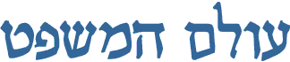
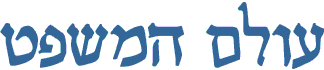

|
 |
סקר מרצים: המלצות,ציונים - על התמחות - החלפות קורסים - תאריכי הקליניקות - פרופ' זילברשץ - מזל טוב

|
|
|
|
"נאמר - על דרך ההפלגה ואפשר שלא כל כך על
דרך ההפלגה
כי "תאונת דרכים"
|
||
|
|
הארכיון | המסכמים | הדירקטוריון | מדברים עלינו |
האתר פועל בשיתוף פעולה עם הפקולטה
למשפטים בר-אילן וממומן ע"י אגודת הסטודנטים
בהכרה וסיוע של חברת מיקרוסופט
ישראל